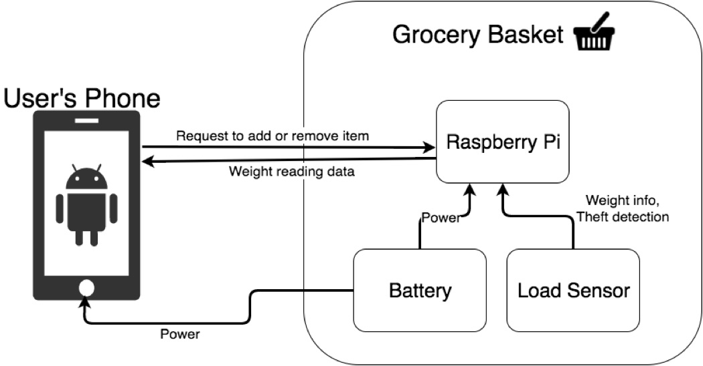

Express Basket
Express Basket will streamline the shopping experience in the grocery store and utilize localization to provide helpful functionality. This system utilizes scanners and load sensors to provide portable self checkout.
Motivation
Have you ever gone to the grocery store to buy a few groceries and found that the process took longer then it needed to take? Sure the express line speeds up the process but can we do better. With the express basket you can easily find your way around the store and quickly and efficiently purchase your key items in much less time with just the use of your phone. The Express basket allows you to chart out your path and to purchase as you go for a fast stress free shopping experience.
Competitive Analysis
-

Board of Awesomeness
Samsung tablet and Microsoft Kinect used to track shoppers
Express Basket tackles the same problem while also providing the portable self checkout experience.
-

Shopping Buddy
Includes a tablet that allows the user to browse all of the grocery store items and scanner to eliminate the checkout process
Express Basket's interface is on a smartphone application which will provide the user with a more familiar interface and save on costs.
-

Self-Checkout
Standard self-checkout technology that exists at most grocery stores
Express Basket aims to mobilize this experience and utilize localization to provide useful functionality.
Requirements
Hardware Requirements
For hardware, we'll need:
- Raspberry Pi (micro-controller)
- Pressure/Weight sensor
- NFC Terminal
- Bluetooth module for microcontroller
- Battery
- USB Type-C Fast charging cables/adapter
- Smart Phone (Android)
- Camera
- NFC
Software Requirements
For software we'll need:
- Mobile App
- Barcode Scanner
- Android Pay integration
- Coupon Recommendation
- Grocery list optimizer
User Experience Requirements
The following requirements would greatly improve the user experience:
- Easy to check out a basket
- Basket can track location
- Charge the user’s phone
System Description
Smart Basket
The Smart Basket will carry onboard a micro-controller, a load sensor, a bluetooth transceiver, as well as an NFC transceiver.
Microcontroller
The microcontroller will be used to orchestrate the usage of all of the sensors and communication with transmitters. It will read and write data from the load sensor, bluetooth transceiver, and NFC transceiver.
Load Sensor
The load sensor will be able to detect a range of weights. It will communicate its observed weights to the microcontroller.
Bluetooth Transceiver
The bluetooth transceiver will communicate the observed weights from the load sensor to the mobile phone. The bluetooth transceiver will also communicate the existence of nearby BLE beacons for indoor localization.
NFC Transceiver
The NFC transceiver will communicate directly with the phone to link the phone to the cart via bluetooth, as well as for checking out using Android Pay.
Power
The Smart Basket will be powered by an onboard battery that is charged using the USB Type-C fast charging specifications. We will also charge the user’s phone on the same battery.
Mobile Application
We will develop a native Android mobile application to easily allow users to interact with the Smart Basket.
Barcode Scanner
The application will feature a barcode scanner so the system can easily identify the product and obtain its correct weight. This requires the mobile device in question to have a camera.
Virtual Cart
The mobile application will also maintain a list of items that have been checked into the cart known as the virtual cart. It will list items as well as the current total of the cart. Users will be able to remove items from their virtual cart, by interacting with the app.
NFC Payment (Android Pay)
We will be integrating Android Pay to ease the user’s checkout experience. By leveraging the built-in security of the device, we aim to have an extremely secure point of sale.
Basket Integration
The application will communicate with the basket via bluetooth. When the app scans a barcode, it will record the item’s expected weight, then let the user and the basket that the product should be weighed. Upon weighing the product the microcontroller will read from the weight sensor and report the weight via the bluetooth transceiver back to the phone. The phone will then verify the actual weight by comparing it to the expected weight of the product. If the product is of the correct weight, the product is added to the virtual cart.
Routing
For navigating the user through the store we plan on implementing a simple algorithm. Organize the user’s shopping list by aisle, then tell them to traverse the store by the aisles they need to access in order to get everything they need.
System Architecture
- 